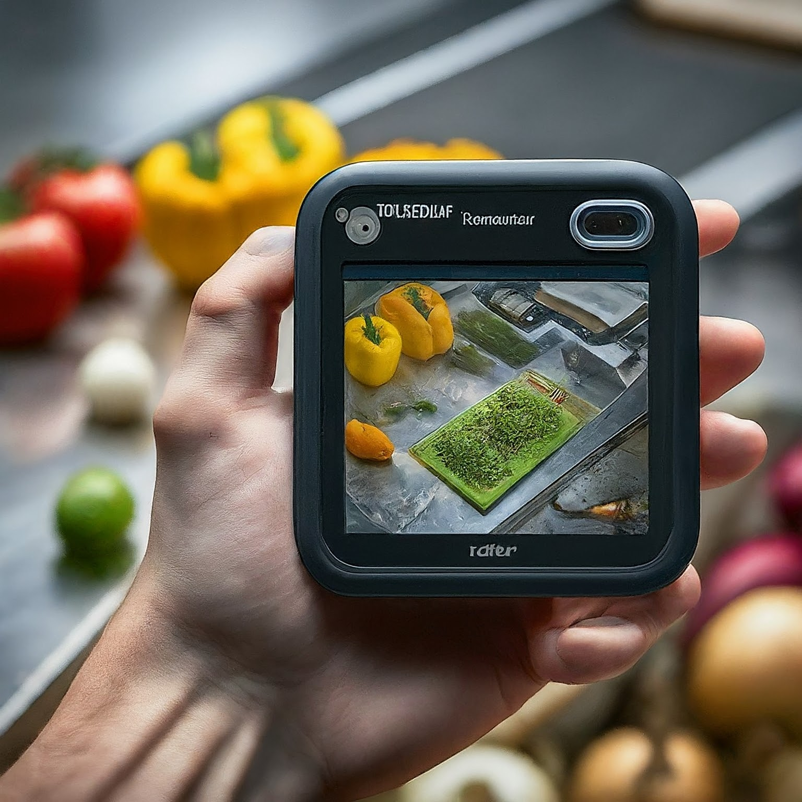
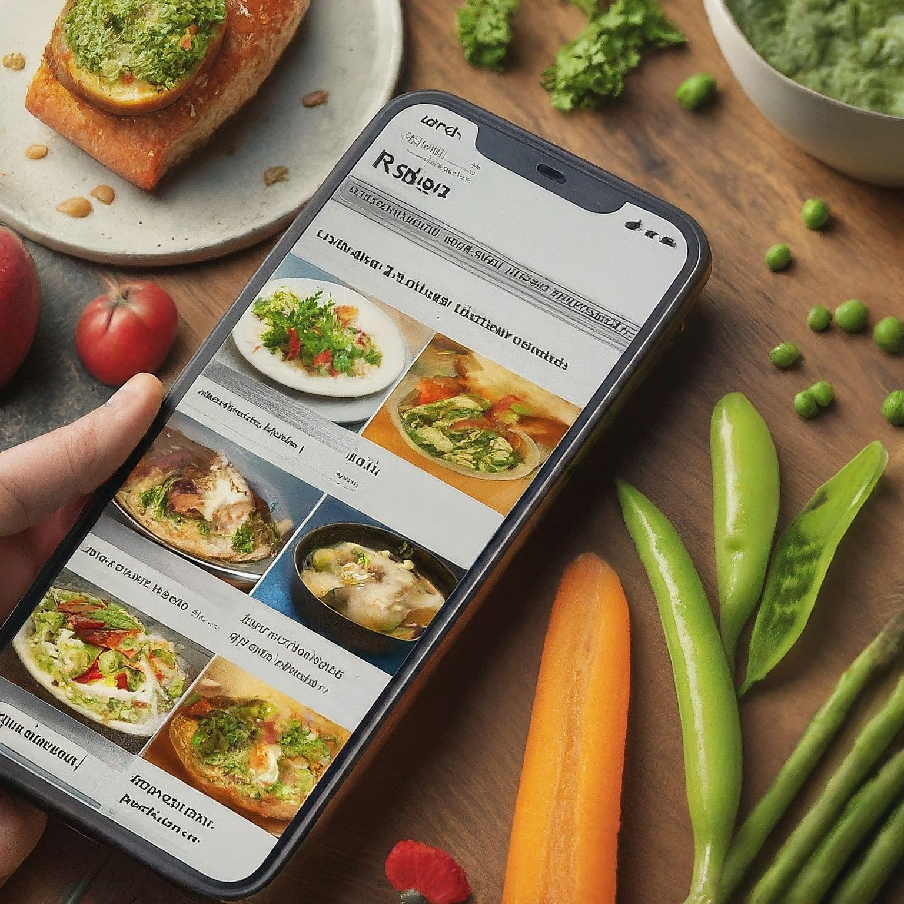

Step 1: Identify Ingredients
- Use the camera feature of the mobile application to scan and identify ingredients by pointing the device towards them.
- Advanced image recognition technology will detect the ingredients automatically, eliminating the need for manual input.
- Ensure proper lighting and focus for accurate ingredient recognition.
Step 2: Receive Personalized Recipe Recommendations
- Once the ingredients are identified, the website will curate personalized recipe recommendations based on your selected cuisine and ingredient availability.
- Explore a diverse range of cuisines and cooking styles tailored to your taste.
- Browse through the recommended recipes to find the perfect dish for your culinary adventure..
Step 3: Procure Missing Ingredients and Cook Hassle-Free
- In case any ingredients are missing, seamlessly integrate with leading e-commerce platforms directly from the website.
- Purchase the required ingredients with just a few taps, ensuring a hassle-free cooking experience.
- Follow the step-by-step instructions provided in the selected recipe to create a delightful dish from start to finish.